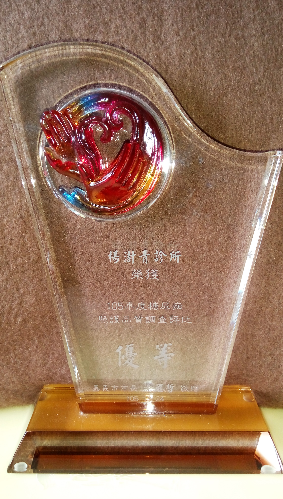
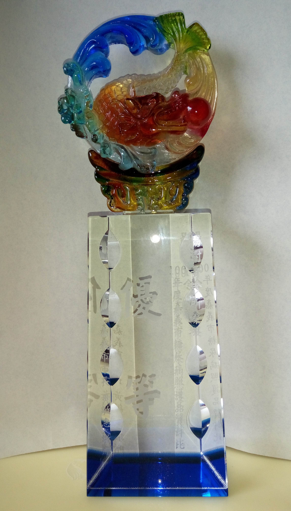
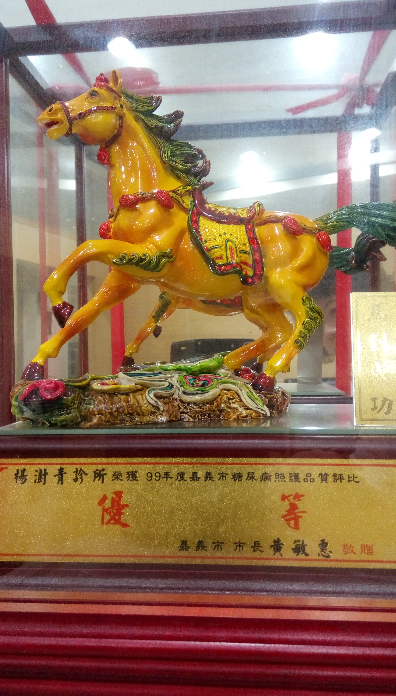

一般內兒科疾病·氣喘·過敏·感冒·咳嗽·痛風
門診時間
星期一至星期五：8:30 AM ~ 12:00 PM
4:30 PM ~ 8:30 PM
星期六：8:30 AM ~ 12:00 PM
4:30 PM ~ 7:00 PM
門診專長
氣喘/過敏/咳嗽
台灣長期籠罩在PM2.5的危害下，呼吸道疾病非常常見
氣喘
"我有氣喘?" 很多人不能接受自己有"氣喘", 他們都以為"喘不過氣來"才是"氣喘", 其實氣喘有輕有重, 輕則表現出來就是咳嗽,很多痰, 咳不出來, 重則有明顯的喘鳴聲, 甚至吸不到氣, 臉色瘡白,有生命危險! 氣喘是氣管及支氣管的慢性發炎反應, 管內充滿了發炎細胞及黏液(痰), 支氣管痙孿, 此時會一直咳一直咳, 很想把塞住的痰咳出來, 才吸得到氣, 但氣管卻是痙孿的, 就是咳不太出來! 止咳藥是沒有用的! 抑制咳嗽只會更嚴重! 咳嗽是正常反應, 當氣管有異物或痰時, 就是要把它咳出來!
氣喘分為外因性及內因性兩種, 通常三十五歲以前的屬於外因性, 大部份是小孩子及年青人, 一個有過敏體質的小孩, 氣喘最好發在四歲, 常有媽媽說:"以前感冒看一兩次就會好, 這次咳了一個月, 換了幾位醫生都沒好, 晚上咳到不能睡!"因為床上很多塵螨, 半夜氣溫低, 體內的類固醇也低, 所以氣喘發作, 一個氣喘沒控制好的小朋友常常是瘦瘦小小, 因為氧氣不夠, 晚上也睡不好, 有很多藥物可以把氣喘控制得很好,到了青春期體質改變氣喘也就好了,或是換個居住環境, 離開過敏原,當然會改善!
內因性氣喘就是自己體內的因素, 而非外在的過敏原, 所以測過敏原是測不出來的, 這種病患大部份是三十五歲以後才有氣喘, 也比較難根治, 本診所提供過敏原測驗及呼吸治療
過敏
過敏反應就是當過敏原進入身體後, 刺激B細胞, 產生IgE抗體, 這些特定的IgE抗體附著在mast cell(肥大細胞)及basophil(嗜鹼性白血球)上,稱為"敏化作用", 當再接觸到同一過敏原時, 已敏化的mast cell及basophil就會釋放出組織胺, 白三烯素及前列腺素等到週圍的組織, 引起血管舒張及平滑肌收縮, 造成蕁麻疹,血管性水腫, 過敏性鼻炎, 氣喘等過敏症狀, 常用的治療藥物有抗組織胺, 欣流(白三烯素阻斷劑),氣管擴張劑及類固醇等
咳嗽
咳嗽為常見的感冒症狀之一。除了一般感冒所引起的咳嗽，慢性咳嗽有很多原因。當然要排除的有肺結核, 慢性氣管炎, 慢性阻塞性肺疾病, 甚至肺腫瘤等, 這些照一張胸腔X-光就可知道, 然而詳細問一下病史, 就可得知大概, 過敏性咳嗽(甚至氣喘)的X-光是正常的, 通常是陣發性, 接觸到過敏原,激烈運動,或清晨會咳的特別厲害, 甚至有喘鳴聲, 避免過敏原是第一步, 在不同的階段有不同的治療藥物, 當情況好轉後, 保養也很重要!
關節炎/痛風
關節炎是全世界最常見的慢性疾病，關節疼痛從而干擾關節的正常運動就叫關節炎。
關節炎/痛風

俗語所謂的"風濕"就是關節及關節周圍的軟組織發炎, 除了常見的運動傷害造成的肌腱炎及滑膜炎以外，關節炎還有很多種:
痛風性關節炎：
痛風就是急性單一關節的紅腫熱痛,但如果沒有控制演變成慢性發炎, 久了會形成痛風石, 而且愈來愈大
感染性關節炎：
由細菌, 病毒或真菌感染造成關節的紅腫熱痛, 很像痛風, 抽取關節液可分, 痛風的關節液可見針狀的尿酸結晶,而感染性關節炎的關節液有很多白血球, 可培養出致病原, 兩者治療上完全不同。
類風濕性關節炎：
一種自體免疫的疾病, 好發對稱的近端手指關節, 早上起床會有短暫的疆硬, 如果病情惡化,會侵犯到身體各器官
退化性關節炎：
過度用力或過度負重造成軟骨磨損變形, 好發手指的遠端關節,膝關節
僵直性脊椎炎：
一種自體免疫疾病,好發於年輕男性。僵直性脊椎炎與一種遺傳記號人類白血球抗原 B27 型（簡稱 HLA-B27 ）有很大關係, 百分之九十五以上的患者均具此種抗原，主要侵犯脊椎關節與周邊大關節的滑膜與肌腱接骨點,其典型症狀為漸進性的慢性下背痛, 病程嚴重和控制不良者，會造成脊椎黏合而無法彎曲，形成竹竿型的脊椎。
其餘還有紅斑性狼瘡關節炎及乾癬性關節炎等
糖尿病/高血壓/高血脂
糖尿病,高血壓,高血脂就是所謂的"三高", 發生率在現代社會不斷攀升

高血壓
定義: 收縮壓高於140 mmHg，或是舒張壓高於90 mmHg
高血糖
定義: 空腹時抽血血糖高於126 mg/dl，或隨機血糖高於200 mg/dl,或糖化血色素大於6.5
高血脂
定義: 總膽固醇值200 mg/dl以上，或LDL值130 mg/dl以上，或HDL 值 40 mg/dl 以下，或TG 值 150以上。
身心症候群/失眠
現代人有很多壓力, 各方面的壓力, 以致身體上出現各種的"不舒服", 這就是"身心症候群"
身心症候群
家庭醫師治療的是"人"而非"器官"或"數據", 人是由靈,魂,體三者合成, 很多症狀不能以單一疾病來解釋, 精神及生理的疾病又息息相關, 現代人有很多壓力, 各方面的壓力, 以致身體上出現各種的"不舒服", 這就是"身心症候群" 快找你的家庭醫師就對了!
失眠
失眠的人愈來愈多! 躺很久無法入睡的也有, 半夜醒來就睡不著的也有, 你的家庭醫師樂意聽你傾訴你的心聲, 按情況開最適合你的藥, 並教導你如何服藥才能達到最佳效果!
一般內兒般疾病
包括皮膚病(皮膚過敏, 濕疹, 香港腳,灰指甲,皮膚感染等)
健康檢查/預防注射及整合性治療
健康檢查的目的，在於「早期發現疾病、早期治療」，並強調「預防勝於治療」的觀念。
健康檢查
免費兒童健檢/成人健檢/大腸癌篩檢及一般自費抽血檢查/氣喘患者的過敏檢測
預防注射

公費流感疫苗(每年十月一日開始)
自費疫苗:
肺炎疫苗
A型肝炎疫苗
B型肝炎疫苗
帶狀疱疹疫苗
四價及九價子宮頸癌疫苗
整合性治療
就是"全人醫療", 以維護你的健康, 成為你的醫師好朋友!
榮譽獎項

105年度糖尿病照護品質調查評比優等
糖尿病照護
糖尿病照護是楊醫師的強項之一，本診所已經多年獲頒照護品質調查評比優等
105年度糖尿病照護品質調查評比優等
100年度糖尿病照護品質調查評比優等
99年度糖尿病照護品質調查評比優等

99年戒菸教戰手冊第三名
Sed scelerisque
Nullam ac rhoncus. Aliquam adipiscing eros non elit imperdiet congue. Etiam at ligula sit amet arcu laoreet consequat. Duis dictum lorem metus, vitae dapibus risus imperdiet nec. Suspendisse molestie lorem odio, sit amet.
Laoreet consequat. Duis dictum lorem metus, vitae dapibus risus imperdiet nec. Suspendisse molestie lorem odio, sit amet.
Suspendisse molestie lorem odio, sit amet. Duis dictum lorem metus, vitae dapibus risus imperdiet nec. Suspendisse molestie lorem odio test.

100年度社區結核病簡易七分篩檢計畫-第三名

Sed scelerisque
Nullam ac rhoncus. Aliquam adipiscing eros non elit imperdiet congue. Etiam at ligula sit amet arcu laoreet consequat. Duis dictum lorem metus, vitae dapibus risus imperdiet nec. Suspendisse molestie lorem odio, sit amet.
Laoreet consequat. Duis dictum lorem metus, vitae dapibus risus imperdiet nec. Suspendisse molestie lorem odio, sit amet.
Suspendisse molestie lorem odio, sit amet. Duis dictum lorem metus, vitae dapibus risus imperdiet nec. Suspendisse molestie lorem odio test.